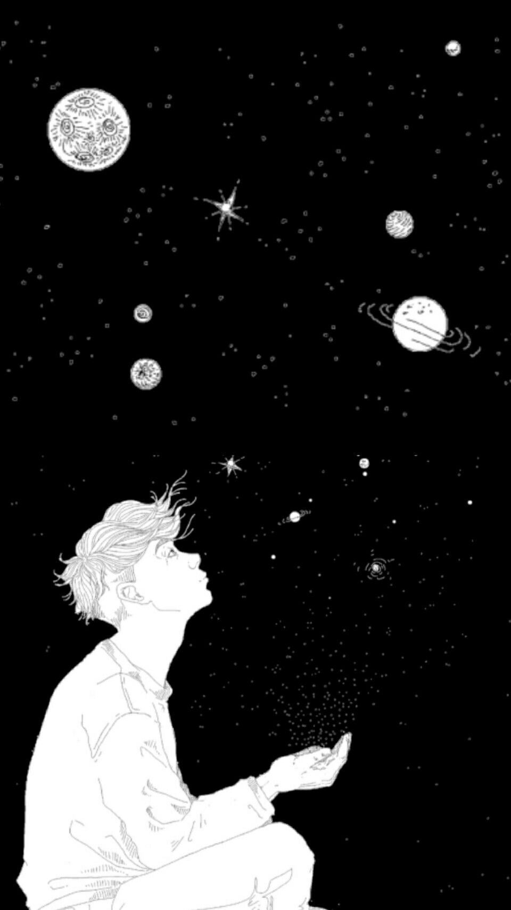

Cinderella wearing European fashion of the mid-1860’sRapunzel, clothed in 1820’s period fashionBelle, based on 1770’s French court fashionMulan, based on the Ming Dynasty periodSleeping Beauty, based on European fashions in 1485Pocahontas based on 17th century Powhatan costume

Snow White, based on 16th century German fashionAriel wearing an evening gown of the 1890’sTiana wearing the robe de style of the 1920’sBelle, based on 1770’s French court fashionMulan, based on the Ming Dynasty periodSleeping Beauty, based on European fashions in 1485Pocahontas based on 17th century Powhatan costumeMulan, based on the Ming Dynasty periodAriel wearing an evening gown of the 1890’sTiana wearing the robe de style of the 1920’sBelle, based on 1770’s French court fashionSleeping Beauty, based on European fashions in 1485